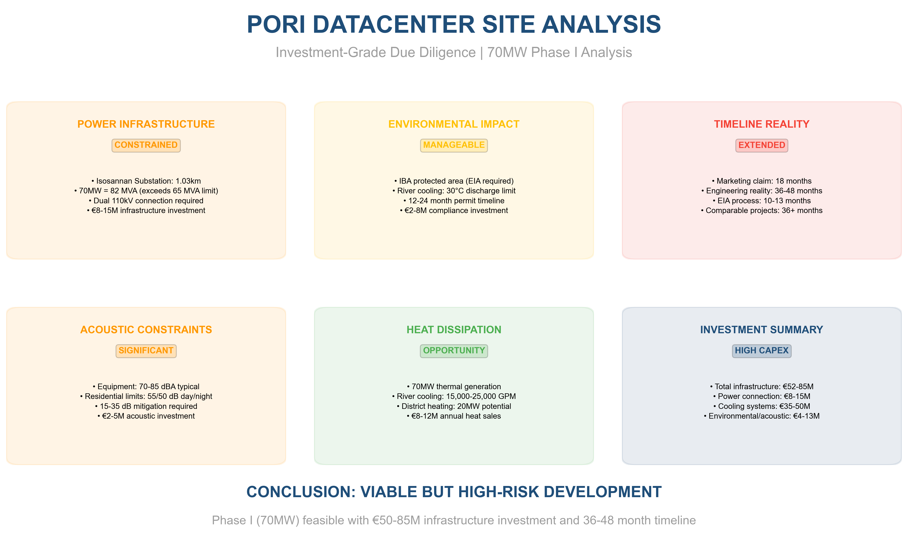
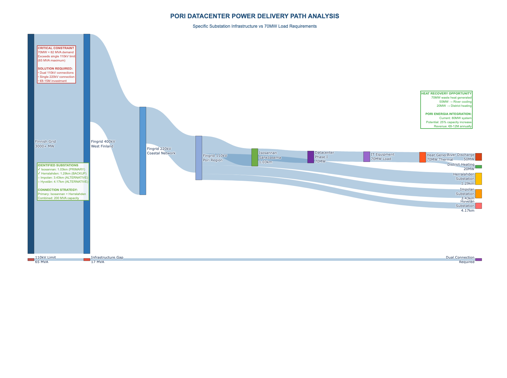
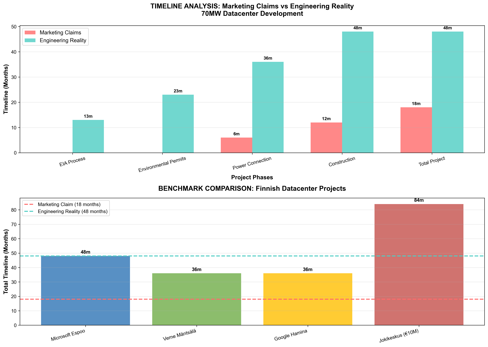
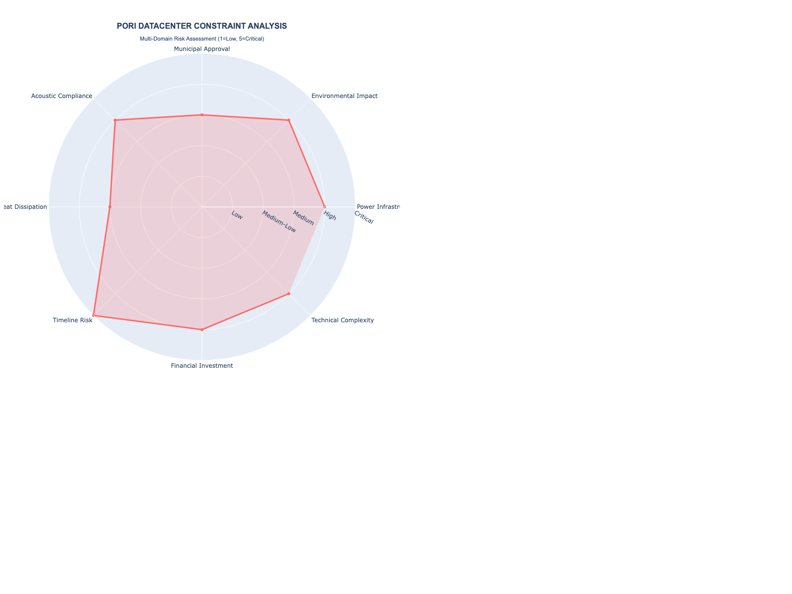

📊 Executive Summary Presentation

High-level findings and investment decision framework with key constraint analysis across all technical domains.
Executive Summary Technical Specs Investment Framework{kind=link}
{kind=link}
{kind=link}
🔌 Power Infrastructure Analysis

Detailed Sankey diagram showing actual power delivery path from specific Pori Energia substations to 70MW load.
Interactive Diagram High-Res Image{kind=link}
⏱️ Timeline Reality Check

Comparison of marketing claims vs engineering reality with benchmarks from actual Finnish datacenter projects.
Timeline Analysis{kind=link}
🎯 Constraint Analysis

Multi-domain radar chart showing constraint severity across eight critical development areas.
Interactive Radar Static Chart{kind=link}
🗺️ Interactive Constraint Maps
Comprehensive constraint overlay mapping with power infrastructure, environmental zones, and technical specifications.
Constraint Overlay Heat Analysis📦 GIS Data Package
Professional GeoPackage
Complete spatial dataset with all constraint layers, technical specifications, and metadata for GIS analysis.